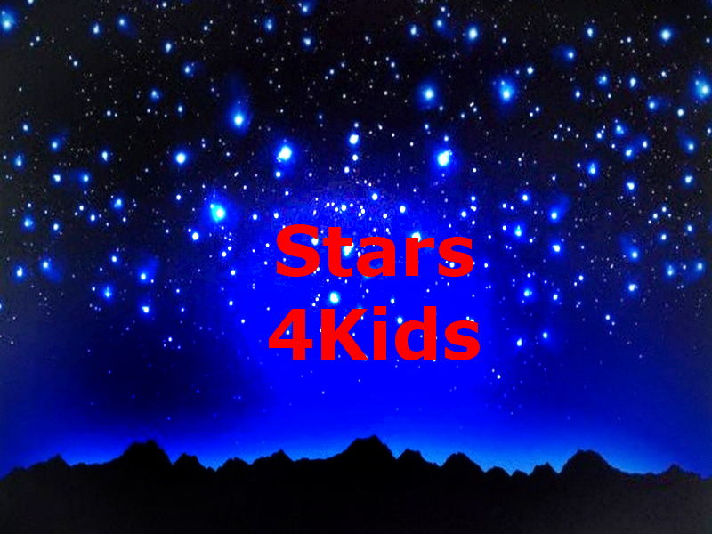

Stars4Kids
Do you want to know how a star is born into the universe?
Have you wanted to explore the outer-regions of space all your life?

What Are Stars?
- Stars are extremely large, exploding balls of gas including hydrogen and helium. Scientists have estimated that there are about 1,000,000,000,000,000,000,000,000 (24 zeros) in the universe! The gases cause nuclear reactions which provides the universe with light and heat. However, stars can be dangerous too. They produce radiation such as gamma rays and ultraviolet rays which are harmful to our skin and bodies. Ultraviolet has been linked to skin cancers such as melanoma. Star's can range from 2226.85°C (4040.33°F) to 17726.85°C (31940.33°F).
The Sun
- Every planet orbits the sun. The sun is a star that keeps our Solar System together with gravity. It is nearly a perfect sphere of hot plasma, hydrogen and helium. These gases create nuclear reactions which give us heat and light. The sun measures a radius of 695,700 km and its surface reaches temperatures of 5514.85°C (9958.73°F).
Lifecycle of a Star
- A star starts with a stellar nebula which is a huge cloud of gas and dust. Pressure caused by gravity, causes the dust and gas to condense to form a star. Now this is where the cycle splits. If an average star is formed, it will have a long lifespan and will slowly expand into a red giant at the end of its cycle due to a loss of fuel. Once it runs out of fuel, it will form a planetary nebula which slowly loses layers and forms a complex structure. It will finally turn into a white dwarf which is extremely dense before dying. However, if a massive star was formed at the strart of the cycle then it will completely change. At the end of its cycle it will expand into a red supergiant which are the largest stars in the universe. It will then create a supernova which is a giant explosion of particles, triggered by the loss of fuels. Finally it will either end as a Neutron Star which is the remnants of a supernova or a black hole which has infinite gravity but no mass. Underneath is an image of the cycle of a star.